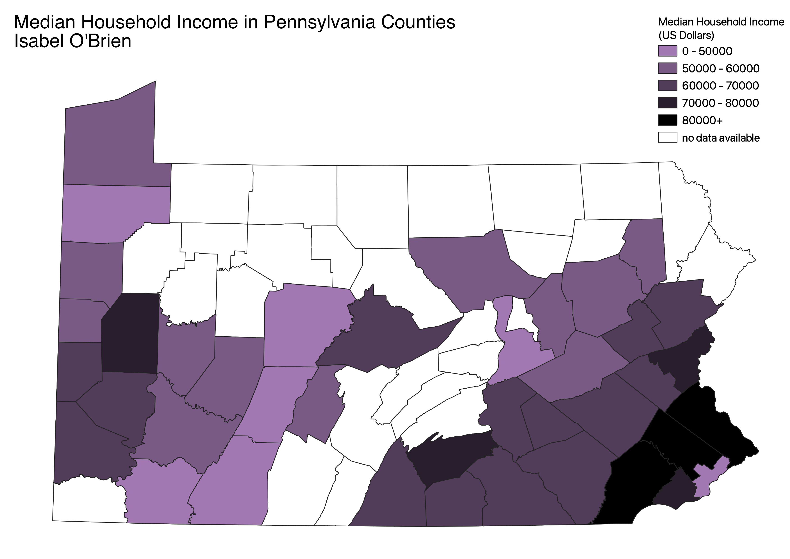

Homework 7: Census data choropleth
Isabel O'Brien
This map shows the median household income in different Pennsylvania counties in 2019. I was curious to see what the income range in Pennsylvania looked like, since I knew from visiting that there were both very rural and very urban areas. I was interested to find out that the US census website did not include data for many of the counties - I am not sure why this is, but it might have to do with how rural those counties are or a lack of sufficient data. The map projection is EPSG:2271.

Data used for this project
CSV dataset
Link to shapefile
Link to geoJSON